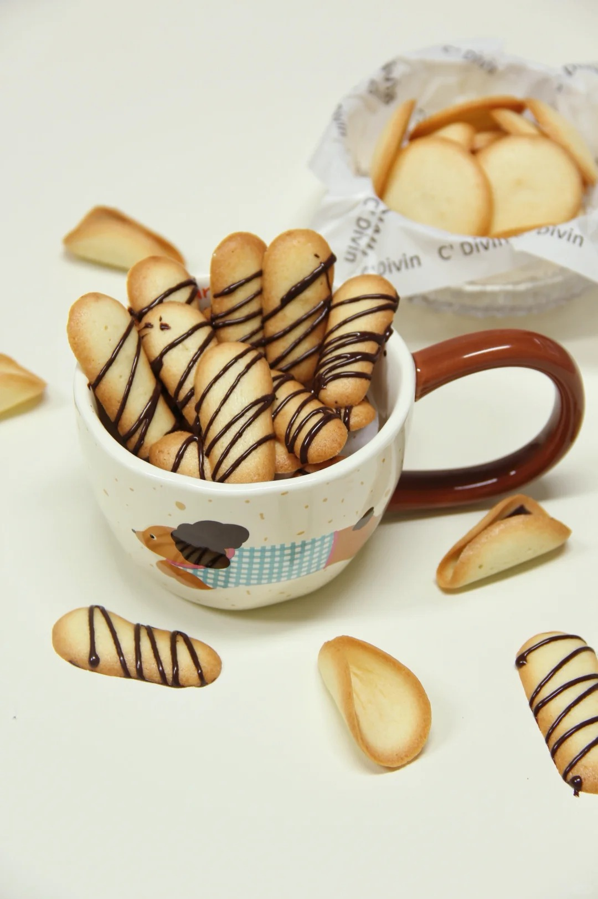
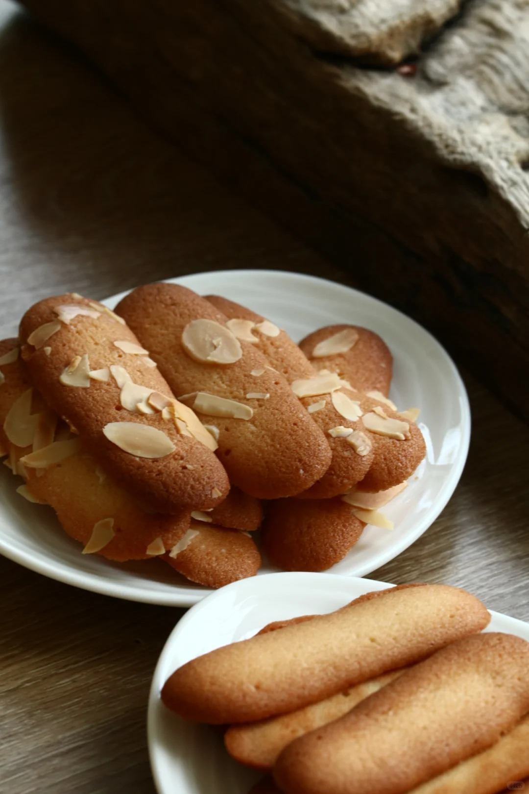
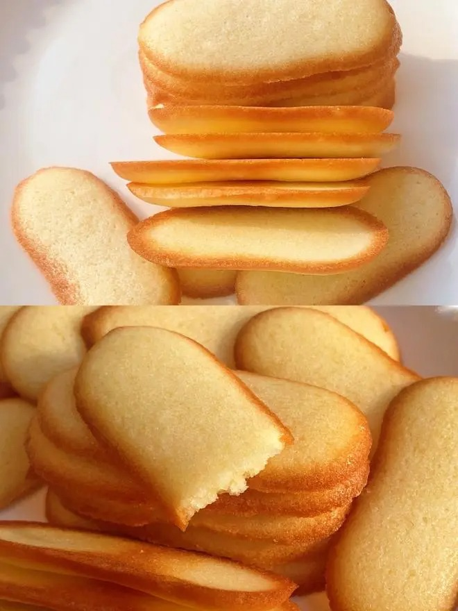

猫舌饼干



猫舌头饼干（法文名Langues de chat，英文名Cat's tongues）是源自法国的经典薄脆饼干，因形似猫舌得名，日本白色恋人饼干即以此为基底夹白巧克力制成。传统呈长条形，可演变圆形、卷曲状等形态，以黄油、糖粉、蛋白、面粉及红茶粉为主料，日本版添加白巧克力夹心。制作时需将黄油软化，分次混入未打发蛋白与过筛面粉，形成柔软面糊后挤成7-8cm条状，保持4cm间距防粘连。烘烤温度多为170℃，时间9-10分钟至边缘金黄，趁热离盘冷却防过烤。成品薄脆奶香，含红茶或香草风味变体，需密封防潮。工艺关键点包括蛋白用量影响脆度、面糊质地控制及精准烘烤判断。
制作方法：